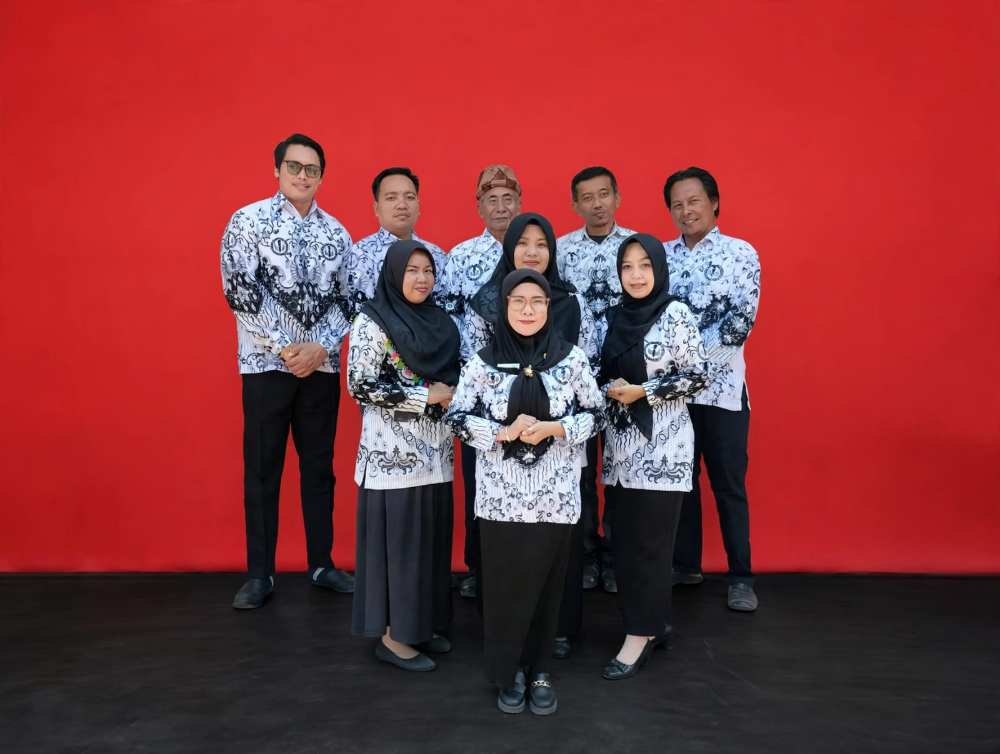
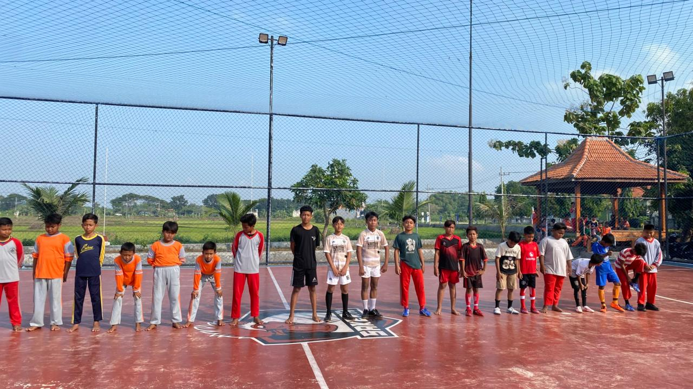
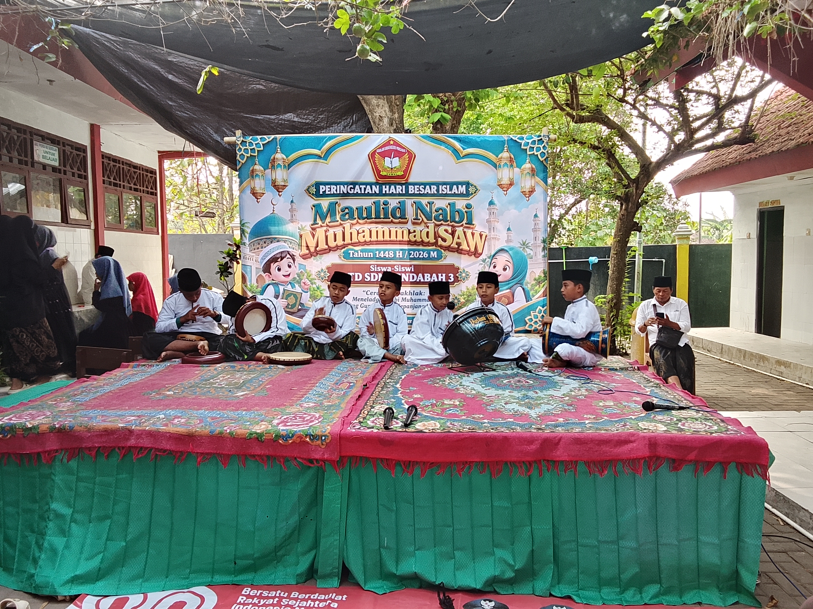
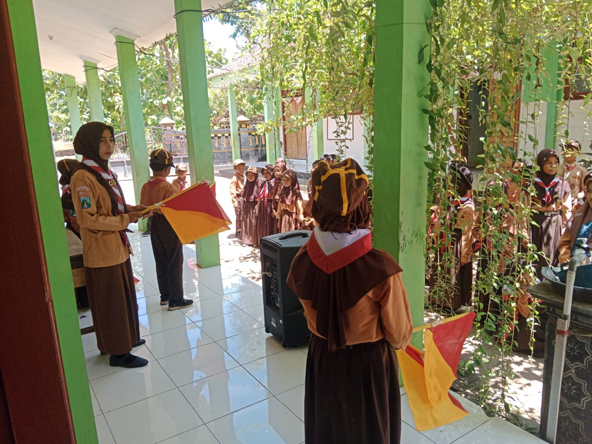

SELAMAT DATANG DI
Membangun generasi yang berkarakter, berprestasi, kreatif, mandiri, dan peduli terhadap lingkungan.
Mengenal SekolahPROFIL SEKOLAH
| Nama Sekolah | : | UPTD SDN Pendabah 3 |
| NPSN | : | 20531285 |
| Desa | : | Pendabah Bawah |
| Kecamatan | : | Kamal |
| Kabupaten | : | Bangkalan |
| Provinsi | : | Jawa Timur |
"Terwujudnya iklim sekolah yang membentuk pembelajar beriman, bertakwa dan berakhlak mulia yang berkarakter, inovatif dan berprestasi."
TENAGA PENDIDIK
Bersama para pendidik, kami berkomitmen memberikan layanan pendidikan terbaik bagi peserta didik.

Para guru dan tenaga kependidikan UPTD SDN Pendabah 3 berperan dalam mendukung proses pembelajaran, pembentukan karakter, dan perkembangan peserta didik.
DATA PENDIDIK
Daftar nama pendidik dan tenaga kependidikan UPTD SDN Pendabah 3.

PROGRAM PEMBELAJARAN
Kurikulum UPTD SDN Pendabah 3 dikembangkan dengan memperhatikan kebutuhan dan karakteristik peserta didik.
Pembelajaran yang memperhatikan kebutuhan, karakteristik, minat, dan potensi setiap peserta didik.
Mendorong peserta didik belajar melalui pengalaman, kegiatan proyek, dan pemecahan masalah.
Pemanfaatan teknologi untuk mendukung pembelajaran yang menarik dan inovatif.
Penguatan kemampuan membaca, memahami informasi, berpikir kritis, dan numerasi peserta didik.
Penguatan bahasa dan budaya lokal sebagai bagian dari karakteristik pendidikan di lingkungan sekolah.
Menumbuhkan sikap disiplin, mandiri, bertanggung jawab, peduli, dan mampu bekerja sama dengan orang lain.
PENGEMBANGAN BAKAT
Kegiatan ekstrakurikuler menjadi wadah bagi peserta didik untuk mengembangkan bakat, minat, keterampilan, dan karakter.
Mengembangkan keterampilan olahraga, kerja sama tim, disiplin, sportivitas, dan semangat kebersamaan.
Mengembangkan minat dan bakat seni keagamaan serta menumbuhkan kecintaan terhadap budaya dan nilai-nilai islami.
Membentuk sikap disiplin, mandiri, bertanggung jawab, bekerja sama, dan peduli terhadap lingkungan.
DOKUMENTASI
Dokumentasi berbagai kegiatan dan aktivitas UPTD SDN Pendabah 3.





PENERIMAAN MURID BARU
Informasi persyaratan pendaftaran peserta didik baru UPTD SDN Pendabah 3.
Berusia 6 tahun per 1 Juli 2026.
Fotokopi Akte Kelahiran.
Fotokopi Kartu Keluarga.
Fotokopi ijazah TK jika ada.
Foto 3 × 4 sebanyak 2 lembar.
Melengkapi formulir pendaftaran.
Untuk informasi lebih lanjut mengenai pendaftaran peserta didik baru, silakan menghubungi:
HUBUNGI KAMI
Dsn. Pendabah Bawah, Desa Pendabah, Kecamatan Kamal, Kabupaten Bangkalan, Jawa Timur
20531285